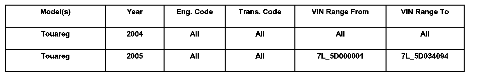
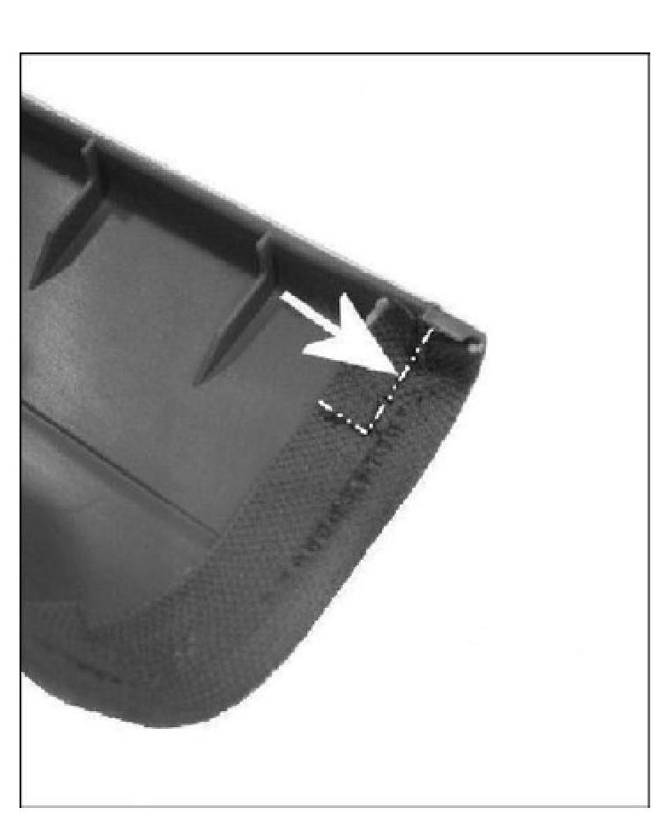
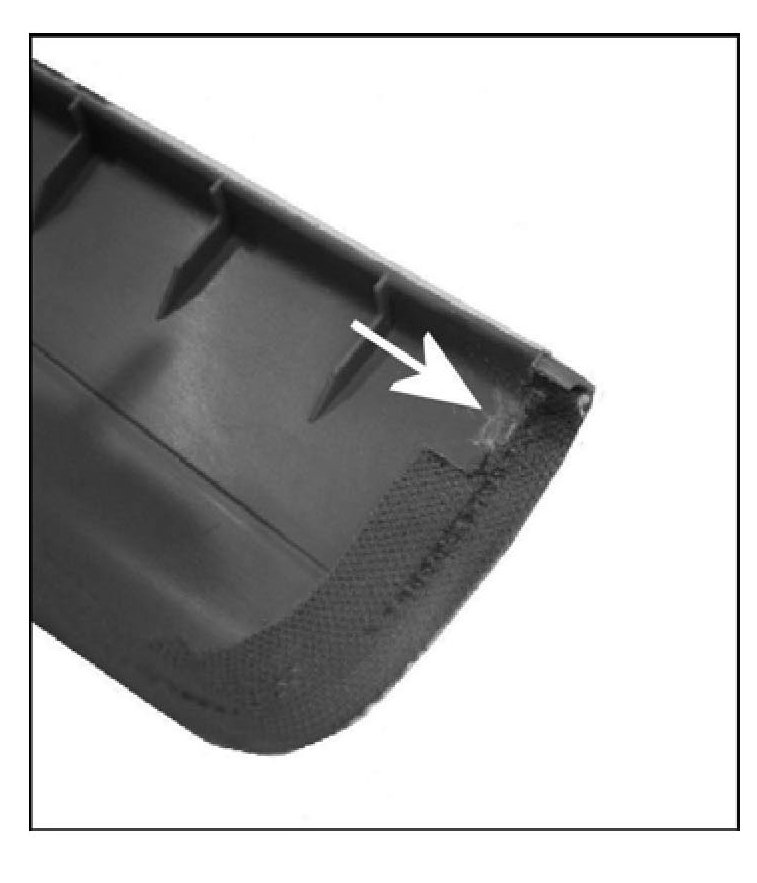
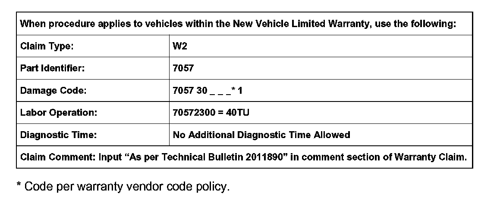

Interior - Poor A-Pillar Trim Fit Against Headliner
70 06 06Jun. 16, 2006
2011890
Condition

Customer States Irregular Fit, Interior A-Pillar Trim at Headliner
The tab of the A-pillar trim doesn't engage the upper edge of the headliner.
Technical Background
The folded cloth material is too thick at the upper edge of the A-pillar causing the A-pillar to become detached from the headliner.
Production Solution
A-pillar trim edge folded cloth material was revised to allow for proper engagement into headliner starting with VIN: 7L_5D034095.
Service
Remove excess cloth material at the A-pillar using the procedure below:
Remove both interior A-pillar trim pieces, see Repair Manual Group 70 Interior Pillar trim or Roof Trim.
Cover working area with clean cloth to avoid snagging or soiling A-pillar material during repair.

Using a felt tip marker, scribe a 20 mm line from the inside edge, under the heat staking marking.

Use a utility knife or scissors, remove the excess cloth material ONLY without removing the engagement tab or cutting through the plastic material of the A-pillar.
Note:
DO NOT remove the plastic headliner engagement tab on the A-pillar.
Install both interior A-pillar trim pieces, see Repair Manual Group 70 Interior Pillar trim or Roof Trim. Ensure proper fit and cleanliness.

Warranty
Required Parts and Tools
No Special Tools required.
No Special Parts required. Always see ETKA for the latest part(s) information.